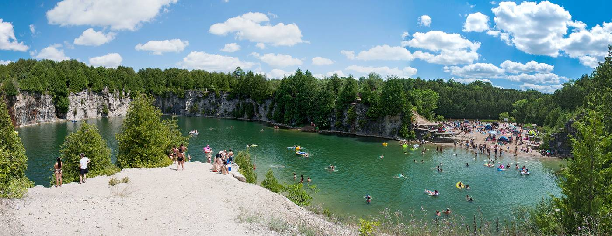

Yes the summer is great and all, but it can also get pretty boring doing the same thing over and over all the time. So what better thing to do than get away! It sounds like a very expensive idea but it doesn’t have to be. Here are some affordable great getaway places so close to Toronto that you could go on a whim!

This abandoned quarry just an hour and a half drive away from Toronto is the perfect day trip! Clear water surrounded by cliffs and trees make the ideal secluded beach. You could tan, swim, and cliff jump! There’s no more need to book a trip out of the country
Less than a fifteen minute drive away from the beach there are lots of activities to satisfy your inner daredevil! Some of these include zip-lining through dense deciduous forests and sunset/sunrise hot air balloon rides! These fun expeditions are perfect photo opportunities and will turn your boring summer day into an unforgettable one!
This gorgeous waterfall is a popular tourist attraction that lures lots out of the city. At just an hour’s drive away, this site is definitely worth visiting. Feel the water on your back and imagine yourself in another world! Visit Webster Falls on a hot summer day with all your friends!
Find more Summer Essentials!
 Back to Top
Back to Top